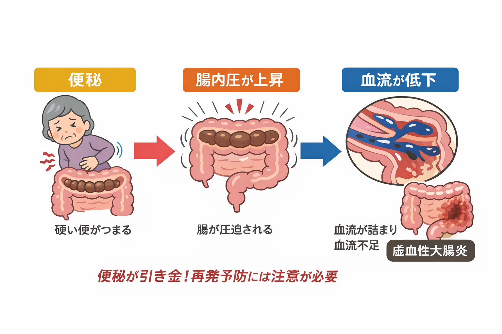

公開日：2026年7月｜最終更新：2026年7月
虚血性大腸炎は、大腸の血流が一時的に低下することで起こる病気です。 突然の腹痛や血便で発症し、驚かれる方も少なくありません。
多くの方は1回で改善しますが、 1～2割程度の方で再発することがあります。 ただし、「毎年起こる」といった決まった周期はありません。

便秘 → 腸内圧上昇 → 血流低下 → 虚血性大腸炎
※食物繊維の摂りすぎや水分不足は、かえって便秘を悪化させることがあります。
(4) 体調管理とストレス対策虚血性大腸炎は必ず繰り返す病気ではありませんが、 生活習慣によって再発リスクが変わる病気です。
特に高齢者では、 「便秘予防」と「水分摂取」が重要です。
日々の生活管理が、再発予防につながります。 気になる症状があれば、早めに医療機関へ相談しましょう。
▶ シリーズ：下痢（高齢者の下痢｜原因・注意点・受診の目安）